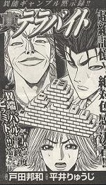
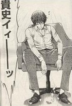
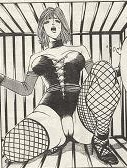

（83）平成19年コミック大賞
昨年に続いて今年も該当作ナシ.... ただしノミネート作品が２作。そのうち一作が優秀賞に。(^-^)/残念ながらストーリーがイマイチだったが、ピラミッド麻雀という奇抜ルールが面白かった。ピラミッド牌の中出し、じゃなかった中抜きは現実には難しそう。しかし山崩しのイメージしかないσ(-_-)には新鮮な発想だった。また絶対色感とか超絶記憶という設定も面白かった（無意味に登場する読者サービスの大股開きもヨカッタし....）。勝敗を決めたのは麻雀のアガリではなく家の傾きというオチなのは、ちと苦しい....それにエンデイングシーンが“あしたのジョー”そうろう....作者の意を組んで、再度の読者サービス（^-^；
また特別賞として、大和田秀樹の「ムダヅモ無き改革」を選定。
面白さ120％の作品なので本来は大賞候補。しかし単発的作品なので、おしくも賞を逸した。来年にかけてまた連載されれば、とうぜん再度の大賞候補。大賞ノミネートのもう１作は まだ連載中 and これから佳境に入るよう。そこで来年のノミネートに回すことに。